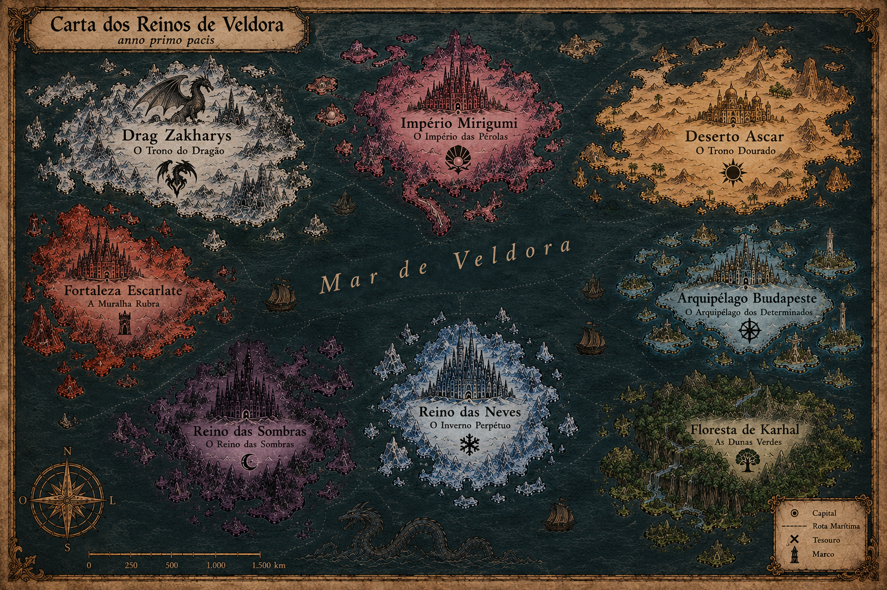

Capítulo I
A Carta dos Reinos
Todo grupo de amigos é, no fundo, um continente: territórios de temperamentos diferentes, unidos por estradas que ninguém lembra de ter aberto — e que ninguém consegue mais abandonar. Esta é a carta de Veldora: oito reinos, nove guardiões, um só juramento — e uma mesa que troca de jogo, mas nunca de gente.

Tocai num reino — no mapa desenhado ou na carta — para o inspecionar; a Estrada do Pacto e as rotas do mar ligam todos.
Capítulo II
Os Guardiões do Pacto
Nove almas, oito reinos, um juramento. Virai cada carta para ler o que a crônica registrou — e coroai, se alguém merecer a vossa devoção eterna.
Luan Dhony
Dragão Soberano
Reino Drag Zakharys
— virai a carta —
Favorito do Códice
“O dragão não se doma — ele reina.”
A espada fala por ele. Onde o Dragão Soberano aponta, a mesa inteira segue — e quando ele silencia, é porque o jogo já está ganho.
- Doze vitórias seguidas no competitivo.
- Chamou o rush com 0,8s de antecedência.
- Nunca perdeu um 1v1 — segundo ele.
Debora Vezetiv
A Imperatriz
Império Mirigumi
— virai a carta —
Favorito do Códice
“Nada escapa ao olhar da Imperatriz.”
Exploradora incansável, caçadora de troféus e de segredos que os desenvolvedores esconderam — e se arrependeram de não enterrar mais fundo.
- Catorze troféus de platina.
- Encontra baú secreto por cheiro.
- 999 de cada recurso, “por garantia”.
Rayssa Vitoria
O Corvo
Império Yaryan
— virai a carta —
Favorito do Códice
“Vê o que ninguém vê — de onde ninguém vê.”
Planando sobre o Yaryan, o Corvo observa tudo antes de qualquer um: cada rota do inimigo, cada emboscada, cada segredo. Chega sempre primeiro — e sabendo demais.
- Vê a jogada do inimigo antes dele.
- Cem dias no hardcore; caiu no 101, rindo.
- Sabia da traição antes de acontecer.
Nayara Hostapiuk
A Lâmina
Império Yaryan
— virai a carta —
Favorito do Códice
“Precisa e silenciosa — como todo bom destino.”
A lâmina do Yaryan: corta o jogo no ponto exato, na hora exata. Onde outros forçam, ela fende — e o que ela decide, o destino executa.
- Corta o jogo exatamente onde dói.
- Costurou a aliança entre os oito reinos.
- A última coisa que o boss viu.
Luís Augusto
Rei Dourado
Deserto Ascar
— virai a carta —
Favorito do Códice
“O ouro obedece a quem o carrega.”
A fortuna viva da mesa: onde há tesouro, ele chega primeiro — e sai com as mãos brilhando e o cofre do Ascar mais pesado.
- Recorde de riqueza da mesa — três temporadas.
- Nunca saiu de um saque de mãos vazias.
- Rei é apelido; o ouro é inventário.
Fernando Fernandes
Bravos e Destemidos
Arquipélago Budapeste
— virai a carta —
Favorito do Códice
“O corno toca — e o medo fica em terra.”
Primeiro a saltar do navio, último a pedir recuo: onde o corno de guerra soa, os bravos seguem. O perigo não o intimida — ele convoca.
- Nunca recuou — nem quando devia.
- Primeiro a entrar na jaula do boss.
- Onde outros veem parede, ele vê porta.
Cristiano Ronaldo
Mestre das Dunas
Floresta de Karhal
— virai a carta —
Favorito do Códice
“As copas ondulam como dunas — e eu as domo.”
O senhor das matas verdes de Karhal: conhece cada trilha pelo nome, cada clareira de cor. Onde todos se perdem entre as árvores, ele caminha de olhos fechados — e chega primeiro.
- Atravessou Karhal de ponta a ponta, sem mapa.
- Encontrou três clareiras que ninguém mapeia.
- Um “SIUU” que ecoa mata afora.
Bruno Martins
Inverno Perpétuo
Reino Snezhnaya
— virai a carta —
Favorito do Códice
“O inverno não passa — ele reina.”
Vem das neves eternas de Snezhnaya: onde ele chega, o inverno fica — gela a partida, congela o avanço inimigo e some na nevasca antes de você entender o que houve.
- Uma tempestade perfeita: 1 contra 5 — venceu.
- Desaparece na neve; reaparece nas costas.
- Quando ele loga, o lobby inteiro esfria.
Guilherme Morais
O Protetor
Fortaleza Escarlate
— virai a carta —
Favorito do Códice
“Ninguém cai enquanto eu me ergo.”
Primeiro a entrar, último a sair: o escudo da mesa. Se alguém vai cair, cai ele — e mesmo assim volta de pé na próxima rodada.
- Tanque por vocação: puxa a atenção e segura.
- Carregou aliado desmaiado por três mapas.
- “Atrás de mim.” — e era verdade.
Arrastai para os lados para ver os guardiões · tocai numa carta para virá-la · na coroa, para favorecê-la.
Capítulo III
A Crônica
Registramos aqui os feitos que a memória do grupo se recusa a esquecer. Os anos são contados pelo Pacto — que, como toda boa lenda, ninguém sabe datar com precisão.
- ANO PRIMEIRO
O Encontro
Um punhado de desconhecidos cai na mesma partida. A química é imediata; a voz, irreconhecível no microfone quebrado. Alguém diz “vamos de novo” — e ninguém sai mais.
- ANO PRIMEIRO
O Primeiro Reino
Nasce o Veldora Realms: um refúgio só nosso, erguido sobre as cinzas de servidores abandonados — sem dono, sem pauta, aberto a todo jogo. O nome vem do dragão, porque toda boa guilda precisa de uma besta para chamar de sua.
- ANO SEGUNDO
A Noite do Boss Caído
Quarenta e sete tentativas no mesmo chefe. Três quedas do grupo no último segundo. Um grito coletivo às quatro da manhã. O boss caiu — e a crônica ganhou sua página mais sangrada.
- ANO TERCEIRO
A Grande Traição
O amigo mais confiável revela-se o traidor definitivo. Catorze rodadas de dedução social, catorze apunhaladas pelas costas. A confiança nunca mais foi a mesma — no lobby, ao menos.
- ANO QUARTO
A Era de Mil Jogos
Battle royale na quarta, sobrevivência no fim de semana, cooperativo até tarde e a campanha de mesa que durou nove meses. Descobrimos que o jogo mudava toda semana; a turma, nunca.
- ANO QUINTO
O Pacto Eterno
A vida puxou cada um para um lado: faculdade, trabalho, mudanças, fusos diferentes. O portal, porém, permanece aberto. Sempre esteve. Sempre estará.
Capítulo IV
O Pacto
Oito artigos, gravados na primeira noite e observados desde então — a lei velha do servidor, escrita à moda da crônica.
- I.
Respeito é a primeira lei: insulto, preconceito e perseguição não têm lugar entre os nossos.
- II.
Desavenças se resolvem com palavra e calma — de igual para igual, sem fogueira.
- III.
A espada só se ergue em terras liberadas — ou quando os dois lados aceitarem o duelo.
- IV.
Caçar quem recém-chegou é covardia de spawn; que todo combate seja justo.
- V.
Nenhuma obra alheia cai, nenhum cofre alheio se abre. O que é do companheiro, é do companheiro.
- VI.
Não ergas a tua casa espremida contra a do vizinho — e o que ofender a vila será derrubado.
- VII.
Nada de spam, nada de arautos de outros reinos, e política fica do lado de fora da taverna.
- VIII.
O portal permanece aberto: para os de dentro, sempre; para os de fora, quando a mesa crescer.